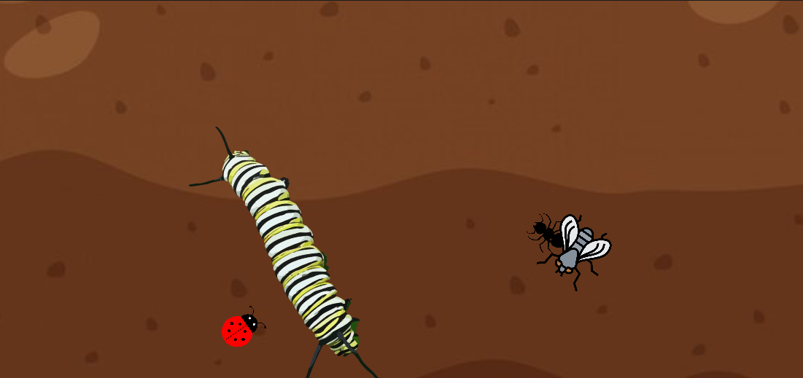
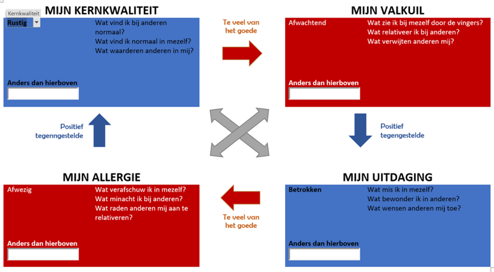
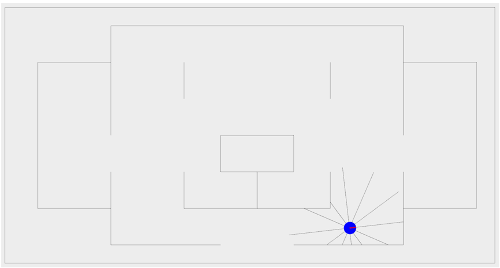
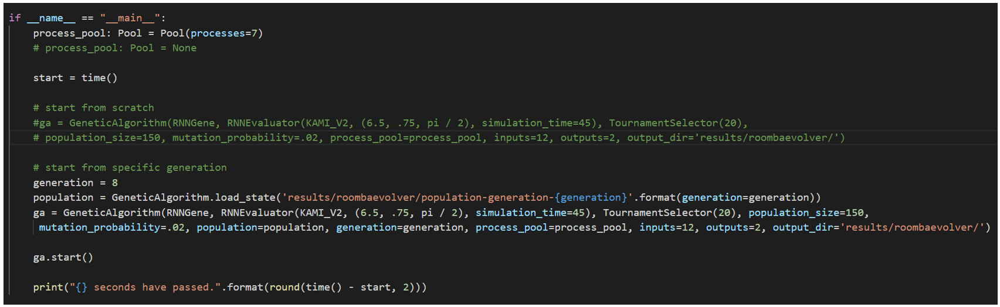

Hackathon
Binnen de opleiding Toegepaste informatica aan Hogeschool PXL wordt studenten de opportuniteit gegeven om onderzoekend te handelen.
Dit gebeurt in het kader van het opleidingsonderdeel I-talent, waarin studenten deelnemen aan een hackathon van twee dagen in samenwerking
met studenten Ergotherapie. Vervolgens worden de leerlingen in groepen verdeeld om mini-games te ontwikkelen in Unity (game-engine).
Het doel is om een afgewerkt product af te leveren dat voldoet aan de eisen van Sint-Oda.
Gedurende de hackathon nam ik de taak van ontwikkelaar. Dit omvat het ontwikkelen van nieuwe mechanieken waarmee de speler kan
interacteren zoals een vliegenmepper om insecten te meppen. Bij het ontwikkelen moet er ook aandacht besteedt worden aan de details.
Alle spellen moeten speelbaar zijn op een tablet, aangezien het doelpubliek bestaat uit mensen met beperkingen moet er rekening gehouden
worden met enkele factoren: contrast van het spel, acties binnen het spel centraal op het scherm houden, beloningen geven bij succesvolle acties enz.
Om een mooi afgewerkt spel op te leveren zoeken student op hoe Unity precies werk zoals het toevoegen van nieuwe objecten waarmee de speler kan spelen,
een menu aanmaken en geluidseffecten toevoegen. In de planning van de hackathon zijn er momenten voorzien voor de studenten van Ergotherapie en Toegepaste Informatica
om te kijken naar de vordering van het spel, alsook na te checken of de richtlijnen correct nagevolgd worden. Dit wordt twee keer per dag gedaan om te zorgen voor
goede communicatie. De tweede dag van de hackathon begint met een korte verwelkoming om de algemene stand van zaken toe te lichten aan alle studenten. Hierna kunnen
de studenten weer verder werken aan de spellen. Aangezien het de laatste dag is moeten alle groepen hun prototypes afwerken, om te zorgen dat Sint-Oda gebruik kan
maken van het werk dat de studenten produceren, moeten alle groepen eerst een aantal checks afgaan: elke spel moet foutloos builden (een proces waarbij de game-engine
het spel gaat compileren om het te kunnen starten), code van de projecten moeten beschikbaar worden gesteld voor de lectoren die de hackathon begeleiden, een demo moet
voorbereidt worden. Bij de demo moet elke team een korte introductie geven van alle teamleden en de rol die het teamlid heeft genomen in tijdens het project. Daarna
vertellen ze kort welk thema het spel om draait en het idee erachter. Als laatste onderdeel vertellen in welke status het spel zich bevindt en hoe het nog verbeterd
zou kunnen worden mochten de studenten er nog verder aan werken.

Als resultaat hebben we als team een werkend spel gemaakt waarvan gebruik zal worden gemaakt. Elke student die deel nam aan de hackathon heeft
iets nieuw geleerd over het maken van computerspellen, van het animeren van de speelbare objecten tot het maken van een menu om het spel te starten
en eindigen. Als resultaat heb ik beter leren werken met mensen die ik niet ken aangezien alle groepen werden samengesteld door de lectoren. Voor
een aantal studenten is game-ontwikkeling zeer interessant, maar beginnen met het maken van spellen leek te ingewikkeld. De hackathon liet ons zien
dat we gewoon eens moeten starten met iets nieuws zelfs als het te moeilijk lijkt.
Vanaf de start van het project heb ik geprobeerd om zo goed mogelijk te communiceren met mijn team en een goede band met elk
teamlid op te bouwen voor een vloeiende samenwerking. Een belangrijk doel voor mij was om ervoor te zorgen dat ik voldoende
waarde gaf aan het team door een positieve bijdrage te leveren. Dit vond ik essentieel aangezien we elkaar niet kenden en oo
k niet de tijd hadden om elkaars manier van werken te begrijpen. Ik heb dit project zeer prettig ervaren omdat ik met Unity
ben begonnen te werken, dit was altijd iets dat ik van plan was, maar nooit de tijd voor nam om mee te starten omdat het me te
ingewikkeld leek. Om projecten tot een goed stand te brengen ben ik zeer empathisch en hou ik rekening met de werkwijze van
andere personen zodat iedereen zich goed kan voelen, deze sterkte zag ik ook terugkomen in dit project.
Wat ik vooral uit deze ervaring zal opnemen is om niet bang te zijn van nieuwe dingen. Op eerste zicht kan iets nieuws leren
complex lijken, maar uit deze hackathon bleek dat niet waar te zijn. Wat me ook opviel was dat ik meer discipline zag bij mezelf,
het was een prioriteit om mijn werk zo volledig mogelijk af te werken. Dit komt vooral vanwege de omgeving waarin we ons bevonden:
een team gevormd door lectoren waarvan je de medestudenten niet kent en ook niet de tijd kreeg om elkaar te leren kennen. Hierdoor
vond ik dat er minder ruimte was voor fouten. De reden dat ik deze opdracht heb geselecteerd was omdat het heel erg past bij mijn
opleiding. Een IT’er zal altijd moeten samenwerken met anderen en vaak zal het voorkomen dat het team waarmee gewerkt wordt niet altijd
bestaat uit bekende gezichten. De technologie zal nooit stil staan, als een programmeur bij wilt blijven zal hij zich altijd moeten bijscholen.
Dit waren ook de twee voornaamste kenmerken die ik terug zag bij de hackathon.
Projectweek
Binnen de opleiding Toegepaste informatica aan Hogeschool PXL wordt er in de tweede semester focus gelegd op persoonlijke ontwikkeling.
Dit gebeurt in het kader van het opleidingsonderdeel I-talent, waarin studenten deelnemen aan verschillende activiteiten om
bovenvermelde doelstellingen te behalen. De projectweek nam plaats van maandag 15 februari tot en met vrijdag 19 februari.
Op de eerste dag van de projectweek worden de studenten verwelkomd en krijgen ze een korte toelichting van alle
activiteiten die ingepland zijn. In de namiddag is er een workshop omtrent kernkwadranten, samenwerken in een team
en reflecteren. Hier gaan de studenten in groep aan de slag om meer inzicht te krijgen in hun eigen vaardigheden,
belangrijk hierbij is dat dit in groepsverband gebeurd. Het geven en ontvangen van feedback is een primair doelwit.
Op de tweede dag nemen de leerlingen deel aan activiteiten met het doel om te leren reflecteren volgens de STARRT-methode
en academisch schrijven van teksten. Op het einde van deze dag krijgen ze uitleg over het opleidingsonderdeel I-Talent.
Woensdag wordt de kans gegeven om bij te leren over hoe een persoon zou moeten netwerken op een jobbeurs en het opstellen
van een LinkedIn-profiel. Op de vierde dag krijgen de studenten de opportuniteit om de opgedane kennis voor het echt te
gebruiken door een deelname aan het online jobevent. De vijfde en laatste dag start het Research Project.
Tijdens de projectweek moest ik deelnemen aan alle activiteiten omdat elk onderdeel een bouwsteen is
van persoonlijke ontwikkeling. In de POP-sessies hebben studenten hun kernkwadranten moeten bespreken.

Voor deze opdracht bespreken studenten hun kernkwadranten om wat meer te weten te komen over henzelf. Een van de belangrijkste taken is leren netwerken,
in de tijd waarin we leven is LinkedIn een zeer belangrijk platform. Op deze website zijn er namelijk veel recruiters en bedrijven die op zoek zijn naar
nieuwe collega’s om hun team te versterken. Een krachtig opgebouwd profiel kan zorgen voor nieuwe kansen. Bij het online jobevent is de kans gegeven
om het dan uit te oefenen. Studenten zoeken naar bedrijven die hun aanspreken en reserveren een moment om samen eens te babbelen, dit is een leerrijke
ervaring omdat het heel erg verschilt van een normale sollicitatiegesprek. Hiernaast is het Thalento-rapport ook interessant, het geeft een waarheidsgetrouwe beschrijving van de stijl van functioneren.
Zo wordt het duidelijk dat een team gebalanceerd moet zijn en nood heeft aan verschillende persoonlijkheden.
Te veel mensen die dezelfde werkwijze hebben kan leiden tot problemen.
Het resultaat hiervan is progressie in persoonlijke ontwikkeling. Meer leren over jezelf en een ontdekkingstocht nemen om kleine geheimen te plukken. Dankzij de
projectweek is een sterk LinkedIn-profiel opgezet om bedrijven een kort en bondige introductie te geven van persoonlijke kenmerken en ervaringen. Alle onderdelen die
behandelt worden doorheen de week zijn precies wat bedrijven willen zien op het profiel. Als team is iedereen op een korte termijn te weten gekomen wat reflecteren
werkelijk wil zeggen en waarom dit nuttig is.
Het effect van de projectweek is groot en heeft veel invloed op vlak van identiteit. Het Thalento-rapport is een goede voorbeeld van het resultaat.
De projectweek was een goed initiatief van de school, ik vind dat de leerlingen een goede kans gekregen hebben om veel kennis op te doen,
vooral de events rond netwerken en het op zoek gaan naar een job aangezien dit het meest praktische en waardevolle ervaring was. Na het
afstuderen hebben we meer weet over de aanpak van het zoeken naar stageplek en studentenjob. Dit geeft ons de mogelijkheid om onze LinkedIn-profiel
of CV aantrekkelijker te maken voor bedrijven.
De lectoren en sprekers hebben op een interactieve manier hun seminaries gegeven om dit op een boeiende manier aan de studenten te geven.
Het jobevent was zeker een belangrijke aspect voor mij, hierdoor heb ik al ervaring kunnen opdoen om een bedrijf aan te spreken voor een mogelijke stage of job.
Het belangrijkste voor mij was het leren netwerken en het belang ervan. Hier ga ik veel tijd en werk insteken door mijn LinkedIn-profiel
en CV up-to-date te houden. Ik zal zeker ook de tips meenemen die Caroline De Groof gaf, zo heb ik geleerd dat houding en de manier waarop je
wandelt veel uitmaakt tijdens een sollicitatie. De taaltips van de taallectoren zal ik zeker niet vergeten en goed proberen toe te passen bij
het schrijven van verslagen. Hetgeen dat ik tijdens de workshop van kernkwadranten heb ontdekt over mijn groep en mezelf, zal ik zeker in het
achterhoofd houden. Hierdoor wil ik aan mijn gedragskenmerken werken door mijn minpunten te verbeteren. Motivatie speelt een grote rol in het
leven van de mens, er werden veel adviezen gegeven over hoe een persoon zijn motivatie kan verhogen in het kader van persoonlijke ontwikkeling.
Luk Weyens en Miriam Leurs deelden hier hun ervaringen over. Om mijn persoonlijke ontwikkeling steeds bij te schaven zal ik regelmatig goed reflecteren
omdat ik gezien heb dat je hierdoor veel bij kunt leren over je identiteit. Deze activiteit heb ik geselecteerd omdat het een werkelijke bijdrage
heeft geleverd aan mijn persoonlijke ontwikkeling, mij heeft geleerd hoe ik moet netwerken en enkele geheimen over mezelf heeft aangetoond.
Innovatieroute AI
In het eerste trajectschijf van de Professionele Bachelor Toegepaste Informatica wordt een innovatieroute van drie
dagen op poten gezet om studenten de kans te geven zich te verdiepen in een technologie.
Dit wordt georganiseerd in samenwerking met bedrijven die veel ervaring en expertise hebben
binnen het domein. Studenten krijgen de keuze om zich te verdiepen in een van de vijf trajecten:
• AI
• UI/UX
• Low Code
• Cloud/Security
• Digital Quality
Op de eerste dag van de innovatieroute wordt een sessie gegeven van het bedrijf Brainjar,
dit bedrijf heeft veel expertise in het domein AI. Het bedrijf maakt allerlei toepassingen
die het werk makkelijker maakt voor bedrijven. De spreker Niels Debrier begint met een eerste
workshop waarbij Deep Learning aan bod komt. In deze sessie worden de in en outs van Deep
Learning uit de doeken gedaan. Niels Debrier geeft als afsluiter een overzicht van projecten
en nieuwe architecturen die gebruik maken van AI zoals objectherkenning. De tweede dag wordt
georganiseerd door Mediaan. De sprekers Niels Munsters en Simon Craenen geven een algemene
introductie tot AI en Computer Vision. Vervolgens geven de sprekers praktische voorbeelden
van toepassingen die op het moment actief worden gebruikt in verschillende sectoren zoals de
healthcare, retail en security sectoren. Om de hoop informatie die gegeven wordt in gebruik te zien,
gaan de studenten aan de slag met een workshop waarin een genetisch algoritme wordt uitgewerkt om een
huisrobot in een virtuele omgeving te leren rondrijden. De laatste sessie wordt gegeven door Cegeka
met spreker Nicholas Eichmann. Nicholas geeft een workshop rond Fast AI 2 met een theoretische introductie en hands-on opdracht.
Voor de sessie van Brainjar moet een model getraind worden met Keras, software om artificiële neurale netwerken te maken om veranderingen
te zien die de computer aanbrengt met elke cyclus. In de workshop van Mediaan wordt wat broncode gegeven om virtueel een huisrobot rond te laten rijden.

Hier zitten echter lege stukken tussen die ingevuld moet worden om het programma werkend te krijgen. Het doel is dat de robot een zo groot mogelijk oppervlakte schoonmaakt. Eenmaal alle code geschreven is, kan er gespeeld worden met de parameters die de resultaten en werkwijze van het artificiële algoritme gaan beïnvloeden.

De innovatieroute laat een interessante indruk achter. Het laat zien dat AI veel groter is dan een eerste impressie laat lijken. De sprekers maken het zeer duidelijk dat niemand weet hoe AI eigenlijk nadenk. Met voorbeelden tonen de sprekers aan dat de resultaten zeer variabel zijn, er kan niet meteen een link gelegd worden met een factor en het resultaat. Het blijkt meer dan simpele keuzes te zijn met 2 mogelijkheden. Met de workshops wordt het duidelijk dat de toekomst zeker niet te voorspellen is, vooral met wat er al bereikt is met de huidige technologie en kennis in het domein. Als resultaat van de innovatieroute is voor het eerst een AI programma op poten gezet met eigen geschreven code. Met de introductie gegeven door de bedrijven is het meer dan mogelijk om verder op dit domein uit te breiden.
Volgens mijn ervaring vind ik dat ik goed heb opgelet tijdens de workshops en actief heb gewerkt. Ik heb veel bijgeleerd over AI en mijn kennis erover uitgebreid. Ik vond de presentaties makkelijk te lezen en duidelijk. De workshops gaven zeker een beter beeld van de theoretische concepten die de sprekers gaven. Met deze voorbeelden besefte ik pas echt hoe groot het domein AI werkelijk is. Dat werken met artificiële intelligentie kostelijk is, lieten de voorbeelden helder inzien. Spreker Niels Debrier liet zien hoeveel resources er nodig zijn om een best simpele toepassing op gang te krijgen. Met een normale computer is bijna niet mogelijk om een model te trainen. Wel liet hij zien dat er voor mensen die als hobby graag bezig zijn met AI genoeg opties zijn om van start te gaan. Google heeft websites online staan waar mensen op kunnen om hun AI programma’s te executeren.
Wat ik zeker meeneem uit al deze sessies is de impact dat AI kan en waarschijnlijk zal hebben op onze toekomst. Ik heb geleerd dat kennis opdoen niet altijd even ingewikkeld hoeft te zijn. De volgende keer ga ik gewoon uitzoeken hoe een bepaald concept in mekaar zit. Het belangrijkste is dat je start en het initiatief neemt om met iets nieuws te beginnen. Ik heb gekozen om dit op te nemen als een van mijn gekozen activiteiten omdat het aantoont dat een breed concept aangeleerd kan worden in een zeer korte tijd met weinig tot geen ervaring. Dankzij deze innovatieroute ben ik erachter gekomen dat doorzettingsvermogen een van mijn sterke punten is, zelfs al vond ik dat het me nooit zou lukken om de werking van AI te begrijpen.